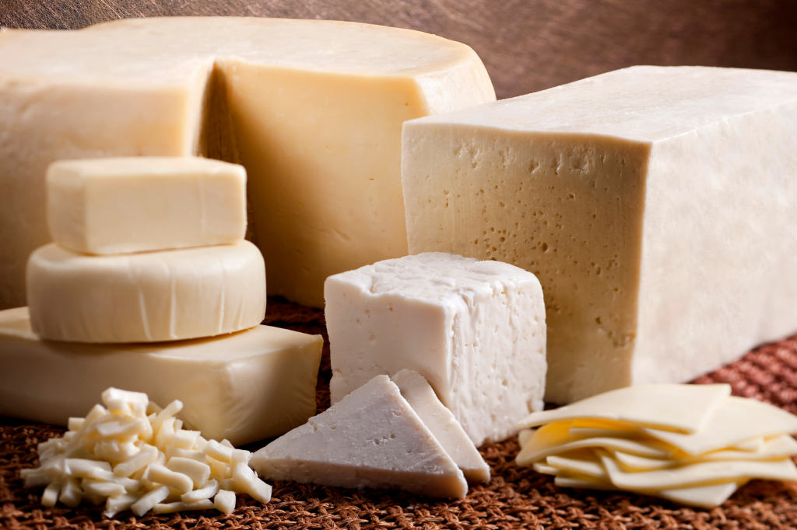
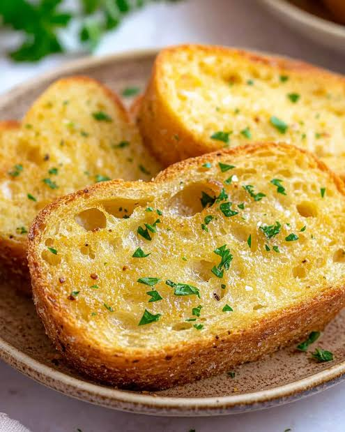
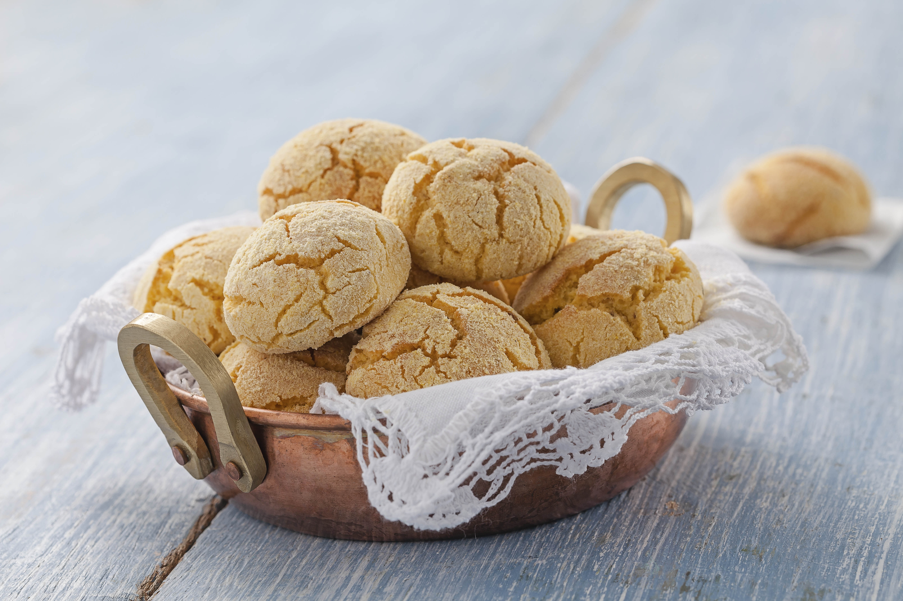

Queijin lá no alto
Uma seleção do nosso melhor queijo artesanal lá do alto da serra, curadinho no ponto e bão demais da conta.
R$ 16,90
Uma seleção do nosso melhor queijo artesanal lá do alto da serra, curadinho no ponto e bão demais da conta.
R$ 16,90
Pão caseiro tostadinho no ponto, "blindado" com uma camada generosa de manteiga da roça derretida. Crocante por fora e macio por dentro.
R$ 8,50
Uma dose de café expresso fortinho, misturado com leite vaporizado no ponto certo. Perfeito para começar o dia com energia.
R$ 7,00
Feito com polvilho caipira e queijo curado de verdade. Assado na hora, bem cascudo por fora e puxando por dentro.
R$ 5,00
Receita clássica de trigo que a gente resgatou lá de trás. Douradinha, macia e perfeita pro café.
R$ 6,50
Grão selecionado, moído e passado na hora. Um café encorpado e cheio de prosa que fica gravado na memória.
R$ 5,00